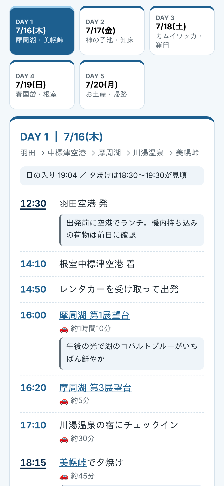

グループ旅行の幹事さんへ
全員の希望を、
行程表に。
みんなの本音をアンケートで集めて、
スマホで見られる行程表にまとめます。
こんな行程表が届きます
見本：北海道・道東 4泊5日・友人4人

日ごとにタブで切り替え
見たい日をすぐに開けます
大事な時刻はひと目でわかる
当日、ここだけ見れば迷いません
場所名をタップすると地図へ
そのままナビとして使えます
ご依頼の流れ
幹事さんが
やることは
3つ。
1
質問に答える
2
アンケートをLINEに貼る
3
行程表をみんなに送る
セット内容
お届けするもの
スマホで見るWeb版の行程表
印刷用のPDF
費用の目安と予約の一覧
雨の日の案
Googleマップのリスト